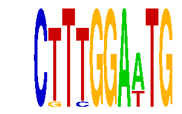

family_10 |
|---|
|  |
| Download PWM |
| Download instances (motifs) |
| Show motif distribution |
Query_ID | Query_Consensus | Subject_Name | Source_DB | Subject_ID | Length | Orientation | Offset | Divergence | Overlap | Subject_Consensus |
|---|---|---|---|---|---|---|---|---|---|---|
| family_10 | CTTTGGAATG | AACTTT | JASPAR | PF0017 | 6 | as given | -2 | 0.532 | 4 | AACTTT |
Sequence | Start_position (from start) | Start_position (from end) | Average conservation | Best conservation score | Instance_with_best_CS | Best_Z-score | Instance_with_best_ZS | Strand |
|---|---|---|---|---|---|---|---|---|
| chr17:81868000-81869563 | 427 | 437 | 0.9999 | 1 | CTTYGGAWTG | 16.888361 | CKTTGGAWTG | -1 |
| chr13:12119812-12125100 | 1535 | 1545 | 0.0002 | 0.001 | CKTTGGAWTG | 16.888361 | CKTTGGAWTG | 1 |
| chr2:74808000-74809351 | 1249 | 1259 | 0.9892 | 1 | CTTYGGAWTG | 16.888361 | CKTTGGAWTG | 1 |
| chr8:64155800-64156927 | 160 | 170 | 0.0015 | 0.004 | CTTYGGAWTG | 16.888361 | CKTTGGAWTG | 1 |
| chr2:68295192-68296900 | 642 | 652 | 0.1211 | 0.46 | CTTYGGAWTG | 14.437937 | CTTYGGAWTG | 1 |
| chr7:56111600-56112643 | 774 | 784 | 0.0334 | 0.064 | CKTTGGAWTG | 14.437937 | CTTYGGAWTG | 1 |
| chr12:25672693-25673693 | 652 | 662 | 0.1746 | 0.394 | CTTYGGAWTG | 16.888361 | CKTTGGAWTG | 1 |
| chr3:101340000-101341300 | 1090 | 1100 | 0 | 0 | CKTTGGAWTG | 14.437937 | CTTYGGAWTG | 1 |
| chr17:27009000-27012400 | 1790 | 1800 | 0.0115 | 0.038 | CKTTGGAWTG | 14.437937 | CTTYGGAWTG | 1 |
| chr6:18601300-18602819 | 159 | 169 | 0.0008 | 0.002 | CKTTGGAWTG | 14.437937 | CTTYGGAWTG | 1 |
| chr14:102196074-102197800 | 1358 | 1368 | 0.0429 | 0.081 | CKTTGGAWTG | 14.437937 | CTTYGGAWTG | 1 |
| chr8:59361700-59363055 | 121 | 131 | 0 | 0 | CKTTGGAWTG | 14.437937 | CTTYGGAWTG | 1 |
| chr2:148428600-148430135 | 1212 | 1222 | 0.0513 | 0.134 | CKTTGGAWTG | 14.437937 | CTTYGGAWTG | -1 |